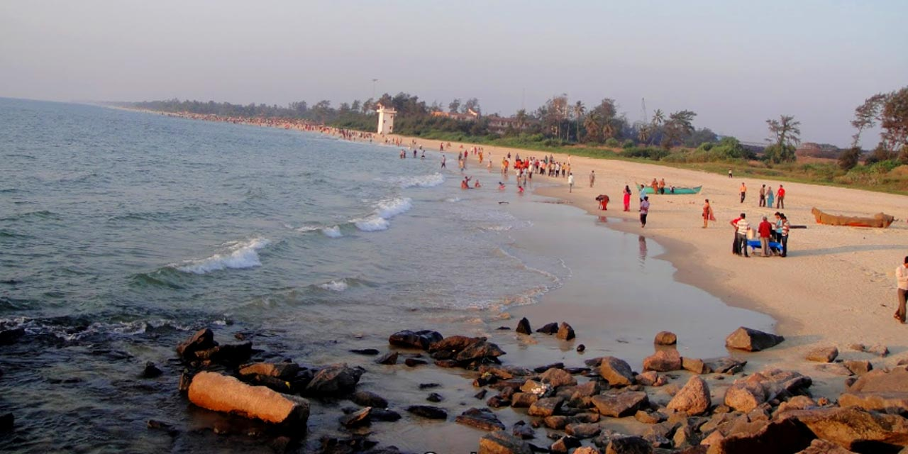
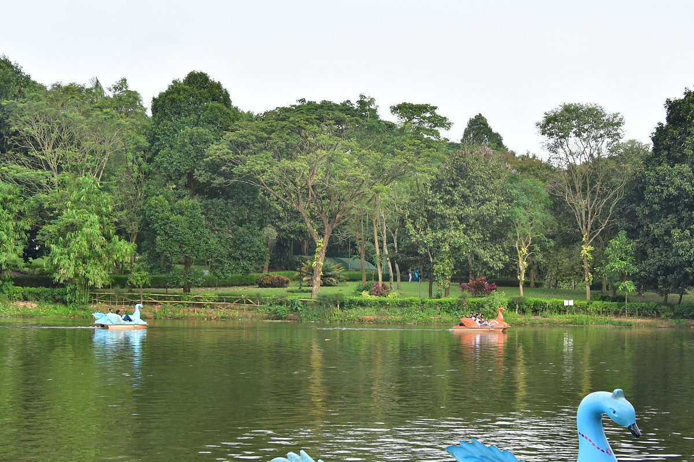
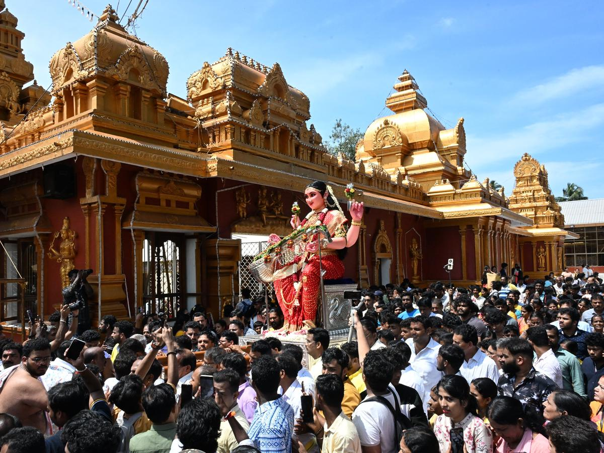
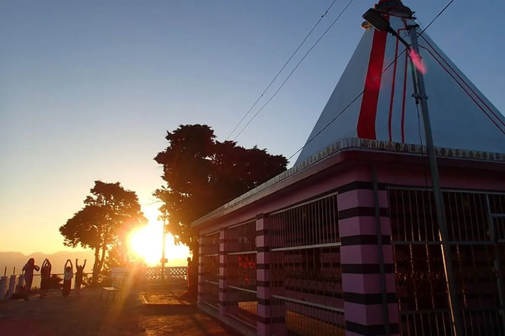
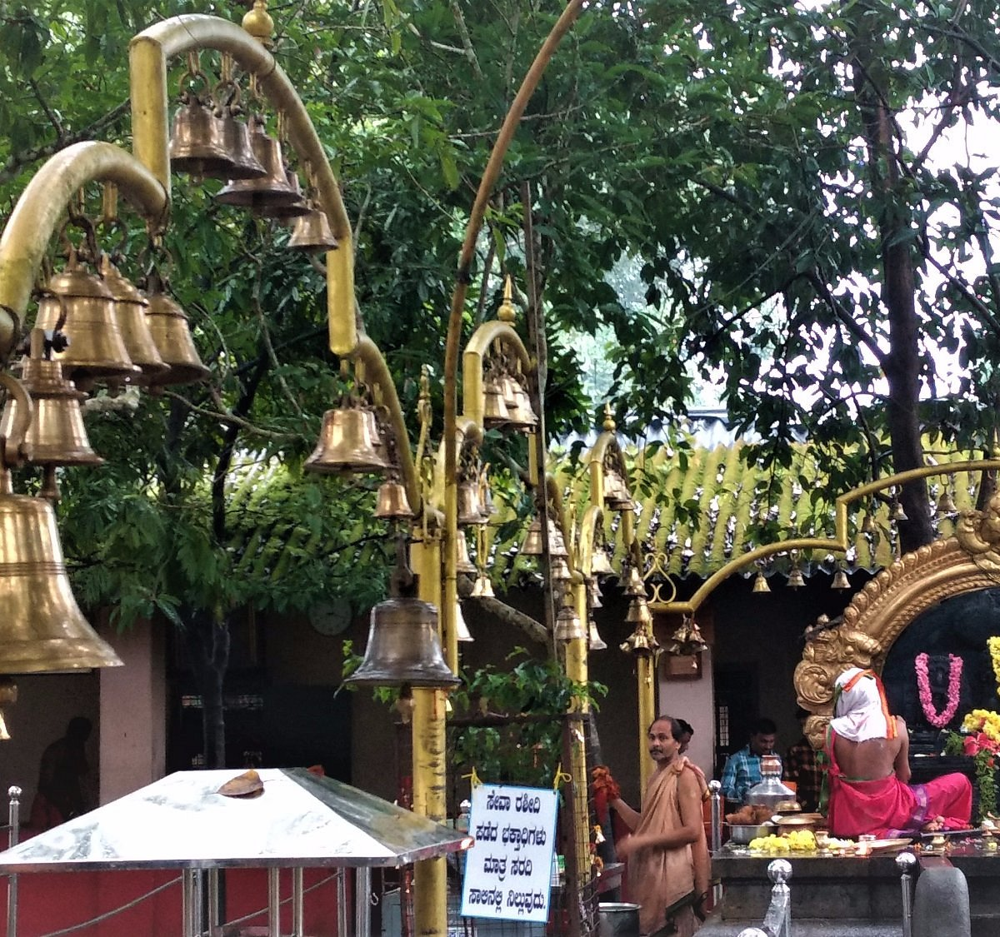

Panambur Beach is one of the most popular and well-maintained beaches in Dakshina Kannada, known for its scenic views and water sports.

Pilikula Nisargadhama is a multi-purpose tourist attraction with a lake, gardens, boating, and zoo facilities.

The Gokarnanatheshwara Temple in Mangalore is famous for its beautiful architecture and cultural significance.

Sri Karinjeshwara Temple is located on Karinja Hill and is known for its scenic surroundings and religious importance. :contentReference[oaicite:3]{index=3}

Southadka is a unique open-field temple dedicated to Lord Ganapathy surrounded by greenery. :contentReference[oaicite:4]{index=4}